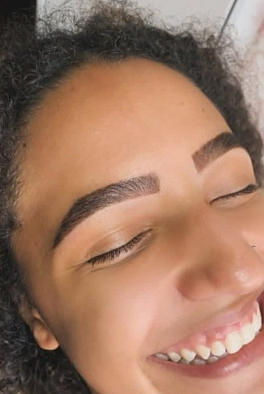
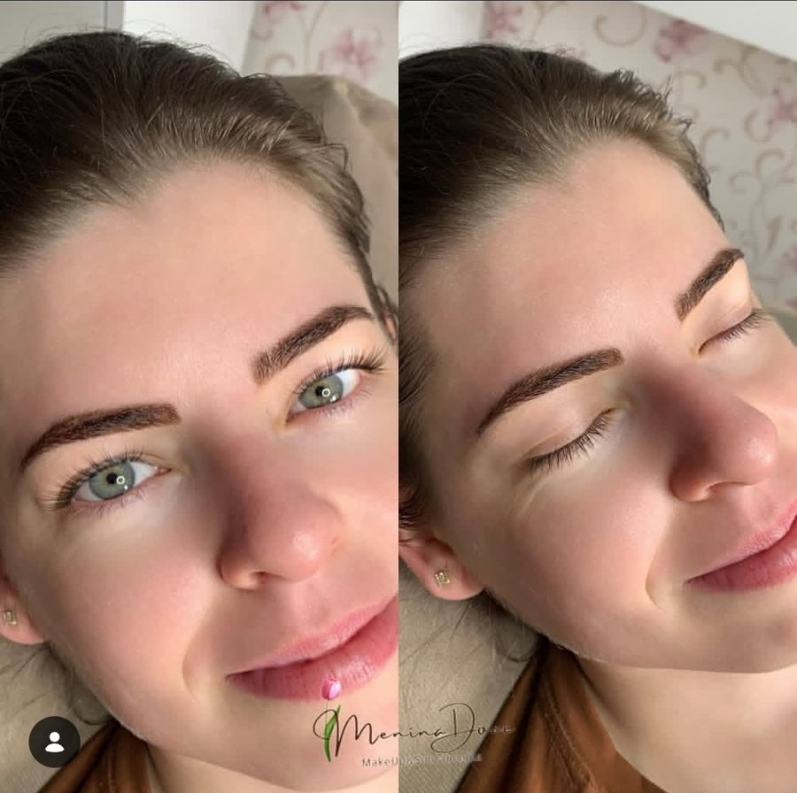
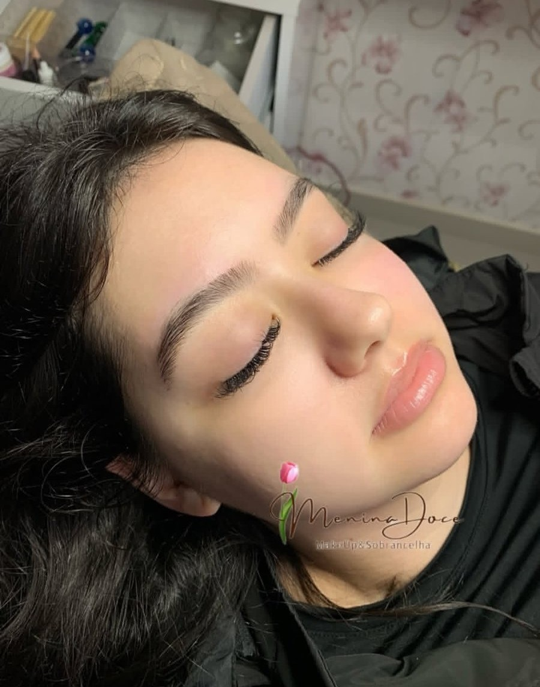
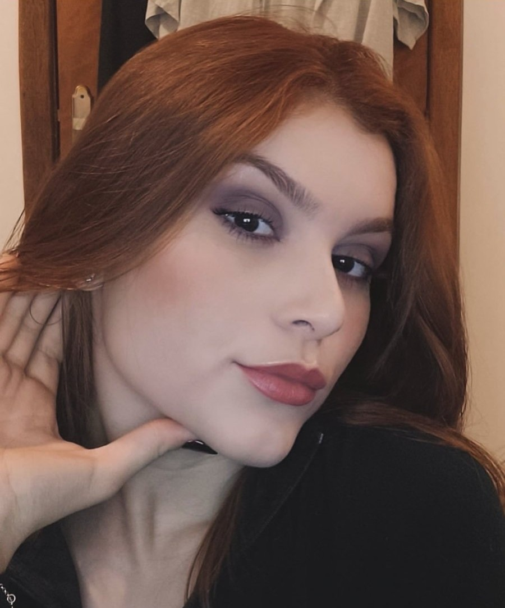
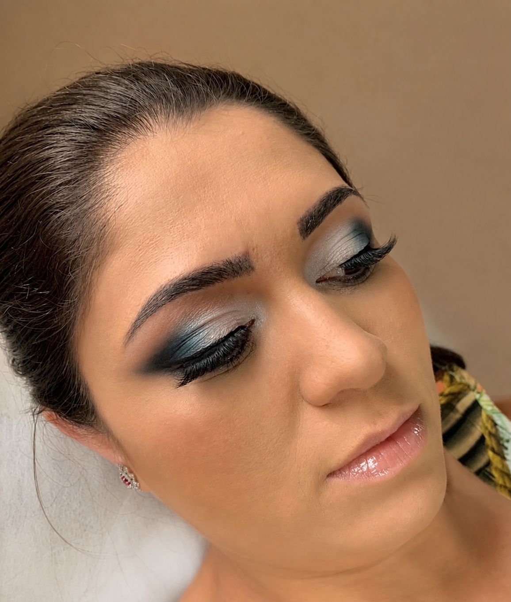
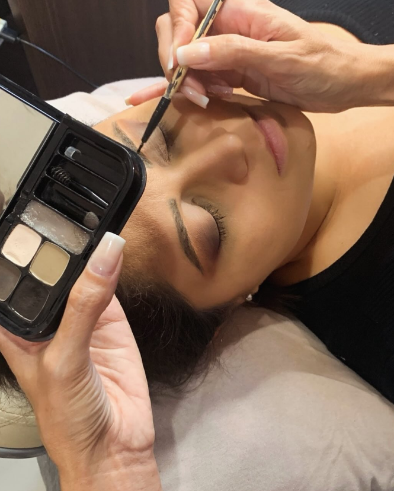

Design de Sobrancelhas
Visagismo individual para valorizar o formato natural da sobrancelha e harmonizar seus traços com leveza.
Design personalizado com visagismo, cuidado em cada detalhe e um resultado pensado para valorizar seus traços sem apagar a sua identidade.


arraste para comparar
Cada atendimento começa observando seus traços, seus fios e o resultado que combina com você — nunca um molde pronto.
Visagismo individual para valorizar o formato natural da sobrancelha e harmonizar seus traços com leveza.
Organização e definição dos fios com acabamento discreto, mantendo a expressão natural do rosto.
Preenchimento e definição para suavizar falhas e realçar o desenho da sobrancelha.
Fios alinhados, visual mais cheio e acabamento moderno para facilitar a rotina do dia a dia.
Maquiagem personalizada para festas, apresentações, eventos e momentos especiais.
Uma nova forma de destacar o olhar está chegando à Menina Doce.
Técnica, naturalidade e acolhimento em cada etapa do atendimento.
O desenho acompanha suas proporções e respeita os seus traços.
A proposta não é mudar quem você é, e sim realçar o que já existe.
Cada cliente recebe um olhar cuidadoso para suas necessidades.
Técnica construída ao longo de anos atendendo diferentes rostos.
Diferentes rostos, diferentes necessidades e a mesma intenção: valorizar a beleza natural.



O design masculino organiza os fios e valoriza o formato do rosto sem deixar a sobrancelha marcada ou artificial. A proposta é um acabamento limpo, discreto e feito para preservar a sua expressão.

Há 13 anos, cada atendimento começa da mesma forma: observando quem está na cadeira. O objetivo é criar um resultado bonito, equilibrado e coerente com o rosto de cada pessoa — sem transformar aquilo que faz você ser você.
Além da técnica, o atendimento foi pensado para ser um momento de cuidado, com atenção aos detalhes e uma experiência acolhedora do início ao fim.
Do delicado ao marcante, cada maquiagem é pensada para conversar com seu rosto, seu evento e o seu estilo.




Técnica, atenção e acabamento em cada etapa do atendimento.
.png)


“Amei o resultado! Uma profissional super caprichosa, delicada e muito talentosa. Recomendo de olhos fechados! Que trabalho lindo, feito com muito carinho, dedicação e perfeição.”
“A Fer é maravilhosa, sou cliente já tem uns 10 anos e não troco ela por nada. Atenciosa e querida.”
“Serviço maravilhoso. Fernanda é maravilhosa. Delicada. Caprichosa.”
“Profissional maravilhosa, competente, simpática, te atende sempre com um sorriso no rosto. Amei, super recomendo!”
Em breve, a Menina Doce também terá extensão de cílios. Uma nova experiência para realçar o seu olhar com ainda mais praticidade e delicadeza.
Extensão de cílios · em breveEscolha seu serviço e encontre o melhor horário direto na agenda online.
Agendar meu horário